Figure fig_ch02_p017_01 (Page 17) Figure fig_ch02_p017_02 (Page 17) Figure fig_ch02_p017_03 (Page 17)
2
ctDzsh sĞsƱ
sc Ʃc
¢}Úh i¢uăǫ p s§.
1 Ƴ 100 ¡ǫ ¢}ÚsǪ i¢u㧠sc Ʃc.
ťc sĞsc s㧠āc sÚ... }ăÅ ā¡
Úc.
1
2
3
4
5
6
7
8
9
10
11
21
ST-389-2-MATHS (M)-3-VOL-1
55
100
65 m¡ų ¢}ÚÃ m¡} Ʃc ? mā¡ sĬ}ă ?
1 Ƴ 100 ¡ m ¢}ÚsÇ ¢ză sāÆ Ʃs.
Ě ǫ sā¡ ctDZsÇ ƣǫ Űc mŦ§ ?
Ǯ§ ¢ǮsǪ s¡ĬĹ c ¡s}Ú...
Figure fig_ch02_p018_01 (Page 18) Figure fig_ch02_p018_02 (Page 18) Figure fig_ch02_p018_03 (Page 18) 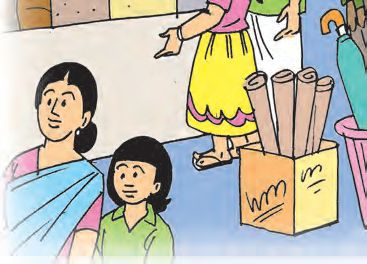
Figure fig_ch02_p018_04 (Page 18) Figure fig_ch02_p018_05 (Page 18) Figure fig_ch02_p018_06 (Page 18)
ഗണിതം
ാൻേഡർഡ് - III
ൂൾ േ ാർ
വിലവിവര
ിക
ഇനം
വില
േയാൺസ്
25 രൂപ
20 രൂപ
േപന
െ
്െപൻ പാ
്
40 രൂപ
60 രൂപ
േനാ ുബു ്
മാh hേപന പാ
75 രൂപ
്
5 രൂപ
െ യിൽ
15 രൂപ
ൗൺ േപ ർ
മിhഹ 100 രൂപ ് സാധന ൾ വാ
ിh
സാധന ളാകാം വാ ിയത് ?
ഞാh കണ
ാ
ിയത്.
ി. ഏെതാെ
ച
ാതി കണ
ാ
ിയത്.
േവെറയും
രീതികൾ
ഉേ ാ?
18
Figure fig_ch02_p019_01 (Page 19) 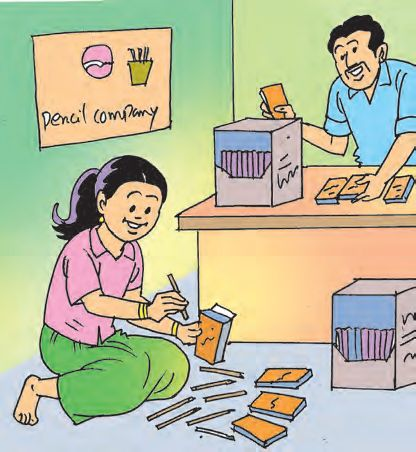
Figure fig_ch02_p019_02 (Page 19) Figure fig_ch02_p019_03 (Page 19) Figure fig_ch02_p019_04 (Page 19) Figure fig_ch02_p019_05 (Page 19)
സംഖ കൾ കൂ ുകാർ
െപhസിൽ ക നി
മിhഹയുെട അ ന് െപൻസിൽ
ക നി ഉ ്. 10 െപൻസിലുകളാണ് ഒരു
പാ ിൽ നിറ ുക. 10 പാ ുകൾ ഒരു
െപ ിയിൽ വ ും.
ഒരു പാ ിലു
െപൻസിലുകളുെട എ
ഒരു െപ ിയിലു
പാ ുകളുെട എ
ം
ം
ഒരു െപ ിയിലു
ആെക
െപൻസിലുകളുെട എ ം
െപhസിലുകൾ െപ ിയിലാ ിയത് േനാ ൂ...
െപhസിലുകളുെട എ ം എഴുതി കള h പൂh
10 െപ ിയിh എ
െപhസിലുകൾ ഉ
19
ിയാ
ാകും ?
ൂ...
Figure fig_ch02_p020_01 (Page 20) Figure fig_ch02_p020_02 (Page 20) Figure fig_ch02_p020_03 (Page 20) 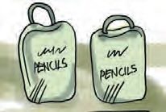
Figure fig_ch02_p020_04 (Page 20) 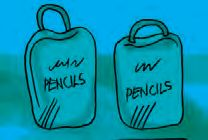
Figure fig_ch02_p020_05 (Page 20) 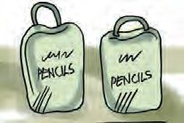
Figure fig_ch02_p020_06 (Page 20) 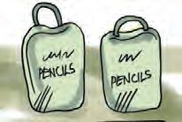
Figure fig_ch02_p020_07 (Page 20) Figure fig_ch02_p020_08 (Page 20) Figure fig_ch02_p020_09 (Page 20) Figure fig_ch02_p020_10 (Page 20)
ാൻേഡർഡ് - III
ഗണിതം
േമ
േ ാർ
കുറ ് െപ ി
ഇതിേല ്
മാ ാം.
എെ ാരു
േമ േ ാറിേല ്
ഭാരം!
ആയിരം െപൻസിലുകൾ േവണം.
മിhഹയും അ നും
ര ് ബാഗുകളിൽ തുല മായി
െപhസിൽെപ ി നിറ ു.
ഓേരാ ബാഗിലും എ
െപൻസിലുകൾ ഉ ് ?
ബാഗിൽ എ
ബാഗിൽ എ
വീതമു ് ?
െപhസിലുകൾ
700
300
ന
?
100
300 + 700 =
100 + ......... =
1000
1000
........ + ........ = ........ + ........ =
1000
1000
േ ാh
ന േ ാറിേല ് 800 െപൻസിലുകൾ െകാടു ു. ര ് ബാഗിലായാണ്
െകാടു ത്. ഓേരാ ബാഗിലും എ െപhസിലുകൾ ?
താെഴയു പ ിക പൂർ ിയാ ുക.
ബാഗ് 1
ബാഗ് 2
ആെക
400
400
800
800
100
800
800
20
Figure fig_ch02_p021_01 (Page 21) Figure fig_ch02_p021_02 (Page 21) Figure fig_ch02_p021_03 (Page 21)
സംഖ കൾ കൂ ുകാർ
നൂറുകളുെട കൂ
ളാ
ി എഴുതൂ...
300 + 400
700
900
തുല മായ കൂ ം
600
100 +100
= ______
250 + _______
= 500
300 + 300
= ______
______+ ______ = 700
______+ ______ = 900
മാറിേ ായി
ൂളിേല ് 870 െപൻസിലുകൾ 100 െ യും 10 െ യും
പാ ുകളാ ാൻ പറ
േ ാൾ മിൻഹ 7 നൂറിെ യും
8 പ ിെ യും പാ ുകളാണ് ആ ിയത്.
എ എ ം പാ ിലാ ി ? ഇനി എ ബാ ിയു ് ?
േചാദ ം വായി േ ാh
എനി ് മന ിലായത്.
ഞാh െച
ഉ
രീതി.
രം കണ ാ ാh
േവ വിവര h.
ഉ
21
രം.
Figure fig_ch02_p022_01 (Page 22) Figure fig_ch02_p022_02 (Page 22) Figure fig_ch02_p022_03 (Page 22) Figure fig_ch02_p022_04 (Page 22) Figure fig_ch02_p022_05 (Page 22) Figure fig_ch02_p022_06 (Page 22) Figure fig_ch02_p022_07 (Page 22) Figure fig_ch02_p022_08 (Page 22)
ഗണിതം
ാൻേഡർഡ് - III
െപhഷൻ വ ു
പാൽ ാരന് 200 രൂപയും പലചര ്
കടയിh 500 രൂപയും മിൻഹ ് 100
രൂപയും െകാടു ണം.
ആെക എ
േവണം ?
രൂപ
മു
ി ത 100
രൂപ കുടു യിലിടാം.
ദിവസം ഒരു രൂപ
വീതം ഞാh തരാം.
ഓേരാ ദിവസവും കുടു യിലു തുക എ െയ ്
മിhഹ കെ
ി കാhഡിh എഴുതി. കാhഡ് പൂh ിയാ
ാനവില കാhഡ് െവ ്
േനാ ിയേ ാh
ഓേരാ ദിവസവും
കി ിയത്
ഒ ാം ദിവസം
1
0
0
ര
ാം ദിവസം
1
0
0
അ
ാം ദിവസം
തുക
100
1
100 + 1 = 101
ആറാം ദിവസം
എ ാം ദിവസം
ഒhപതാം ദിവസം
പ
ാം ദിവസം
പതിെനാ ാം ദിവസം
ഇരുപെ ാ ാം
ദിവസം എ രൂപ ?
അ
ിനാലാം
ദിവസം എ രൂപ ?
22
ൂ...
Figure fig_ch02_p023_01 (Page 23) 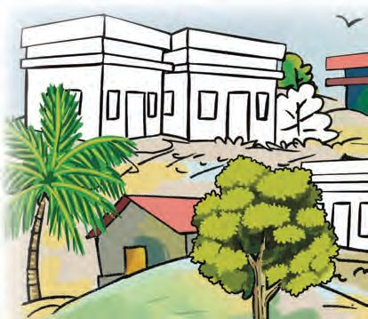
Figure fig_ch02_p023_02 (Page 23) 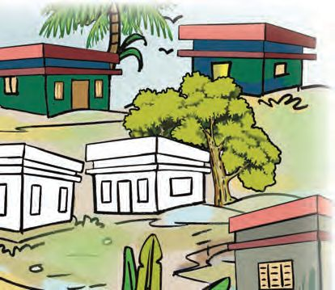
Figure fig_ch02_p023_03 (Page 23) 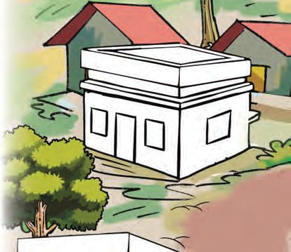
Figure fig_ch02_p023_04 (Page 23) 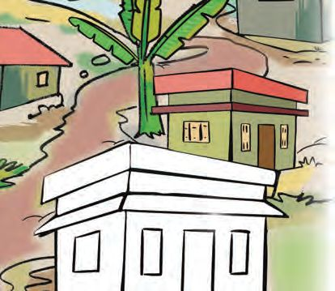
Figure fig_ch02_p023_05 (Page 23) 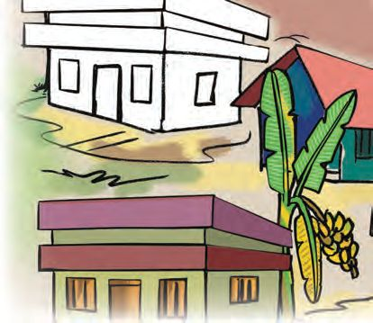
Figure fig_ch02_p023_06 (Page 23) Figure fig_ch02_p023_07 (Page 23)
സംഖ കൾ കൂ ുകാർ
ആേരാഗ സർെവ
ആേരാഗ സർെവ നട ുകയാണ്. വീ ുന ർ മ ിലാണ് സർെവ.
അവർ മിൻഹയുെട വീ ിെല ി. അവളുെട വീ ുന ർ 296 ആണ്.
തുടർ ് സർെവ നട ിയ വീടുകളിൽ ന ർ മമായി എഴുതൂ...
വീടുകൾ ് നി ൾ ് ഇ മു നിറം െകാടു ൂ.
296
295
23
Figure fig_ch02_p024_01 (Page 24) Figure fig_ch02_p024_02 (Page 24) Figure fig_ch02_p024_03 (Page 24) Figure fig_ch02_p024_04 (Page 24) Figure fig_ch02_p024_05 (Page 24) Figure fig_ch02_p024_06 (Page 24) Figure fig_ch02_p024_07 (Page 24) Figure fig_ch02_p024_08 (Page 24) 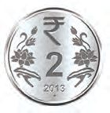
Figure fig_ch02_p024_09 (Page 24) 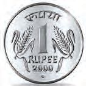
Figure fig_ch02_p024_10 (Page 24)
ഗണിതം
ാൻേഡർഡ് - III
െപhസിലിെ
വില
മിhഹയുെട അ െ ക നിയിh നി ും അനയ് ഒരു െപ ി െപhസിh
വാ ി. 300 രൂപയാണ് വില. ഏെതാെ രീതിയിലായിരി ും േനാ ുകൾ
െകാടു ത് ?
ഞാൻ കണ
ചി
ാ
ിയ രീതി.
ാതി കണ
ിൽ നൽകിയ എ ാ േനാ ുകളും നാണയ
േചർ ാൽ ആെക എ
ഈ സംഖ അബാ
കാണി
ച
ാ
ിയ രീതി.
ളും ഓേരാ ുവീതം
രൂപയാകും ?
സിൽ വര ു
നൂറ്
ാേമാ ?
24
പ
്
ഒ ്
Figure fig_ch02_p025_01 (Page 25) 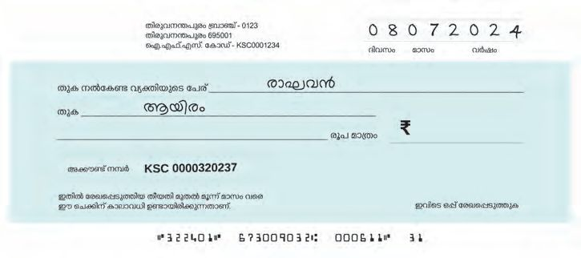
Figure fig_ch02_p025_02 (Page 25) Figure fig_ch02_p025_03 (Page 25) Figure fig_ch02_p025_04 (Page 25)
സംഖ കൾ കൂ ുകാർ
നൂറ് പ ് ഒ ്
അബാ സിൽ ഏത്
സംഖ യാണ് ?
നൂറ് പ ് ഒ ്
സംഖ എ യാണ് ?
നൂറ് പ ് ഒ ്
മു ുകൾ വര ്
േചർ ് സംഖ
ഉ ാ ൂ... എഴുതൂ...
ഈ ചി
െച
ിൽ സംഖ
764 ആകും വിധം
മു ുകൾ വര ുക.
ിെലഴുതാം
മിhഹയുെട അ െ ൈകയിലു െച ് േനാ
അ ര ിൽ മാ മാണ് എഴുതിയത്. അത് അ
ൂ... സംഖ
ിെലഴുതൂ...
അ
പ ിക പൂരി ി ുക.
അ
ിh
അ
ര
125
നാ ൂ ി അ ്
എ ൂ ി െതാ ൂറ്
മു ൂ ി നാ
ിര
617
550
261
25
്
ിh
ിh
Figure fig_ch02_p026_01 (Page 26) 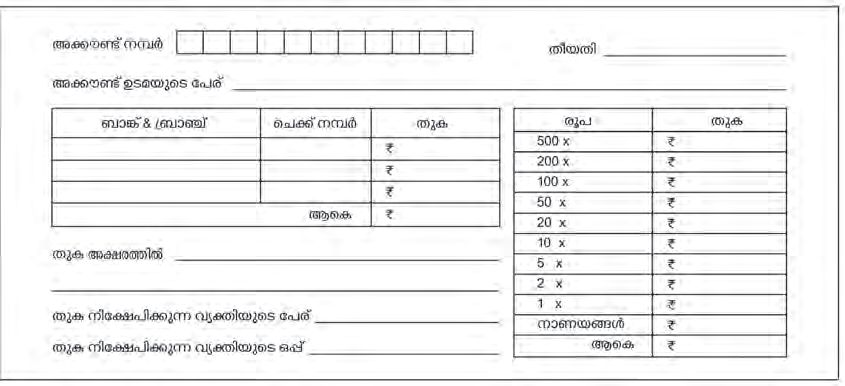
Figure fig_ch02_p026_02 (Page 26) Figure fig_ch02_p026_03 (Page 26)
ാൻേഡർഡ് - III
ഗണിതം
ബാ ിh പണമട ാh
ബാ ിh പണം നിേ പി ാനു
ി ് േനാ ൂ, ബാ ിൽ െകാടു
േനാ ുകളുെട എ വും ആെക തുകയും അതിൽ എഴുതണം.
മിൻഹയുെട അ ൻ 800 രൂപ അട ാൻ 6 േനാ ുകളാണ് ബാ ിൽ
െകാടു ത്. ഏെതാെ േനാ ുകളാണ് െകാടു ി ു ാവുക ?
േനാ ുകളുെട എ
ം
എെ ൈകവശം 370 രൂപ ബാ ിയു ്.
ഇതിെല അ
ളുെട തുക ് തുല മായ
എ ം േനാ ുകളാണ് ഉ ത്. ഏെതാെ
േനാ ുകൾ എ വീതം ഉ ാകും ?
തുക പ
്
109 എ
സംഖ യിെല അ
ളുെട തുക 1 + 0 + 9 = 10
118 എ
സംഖ യിെല അ
ളുെട തുക എ യാണ് ?
മെ ാരു സംഖ 127 ആണേ ാ ?
26
ു
Figure fig_ch02_p027_01 (Page 27) Figure fig_ch02_p027_02 (Page 27) Figure fig_ch02_p027_03 (Page 27) Figure fig_ch02_p027_04 (Page 27) Figure fig_ch02_p027_05 (Page 27) Figure fig_ch02_p027_06 (Page 27) Figure fig_ch02_p027_07 (Page 27) Figure fig_ch02_p027_08 (Page 27) Figure fig_ch02_p027_09 (Page 27) Figure fig_ch02_p027_10 (Page 27) Figure fig_ch02_p027_11 (Page 27) Figure fig_ch02_p027_12 (Page 27)
സംഖ കൾ കൂ ുകാർ
100 നും 200 നും ഇടയിൽ
അ
200 നും 300 നും ഇടയിൽ
ളുെട
തുക 10
കി ു
എ
സംഖ കൾ ?
300 നും 400 നും ഇടയിൽ
ആെക എ
സംഖ കൾ ?
മൂ
എെ ൈകവശം 100 രൂപ, 10 രൂപ
േനാ ുകളും 1 രൂപ നാണയ ളും േചർ ്
456 രൂപയു ്. ഏ വും കുറ
ത് എ
േനാ ുകളും നാണയ ളും േചർ ാൽ 456
രൂപയാകും ?
6 നൂറ് രൂപ, 8 പ
ുരൂപ,
5 ഒരു രൂപ േചർ ാൽ എ
രൂപയാകും ?
4 നൂറ് രൂപയും 9 ഒരു രൂപയും േചർ
ാേലാ ?
3 നൂറ് രൂപ
................ പ
് രൂപ
................അ ത് രൂപ.
മു ൂറു
രൂപ
................ ഇരുപത് രൂപ
................ അ
് രൂപ
................ ഒരു രൂപ
27
Figure fig_ch02_p028_01 (Page 28) Figure fig_ch02_p028_02 (Page 28) Figure fig_ch02_p028_03 (Page 28) Figure fig_ch02_p028_04 (Page 28) 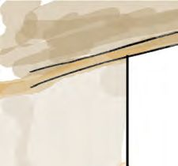
Figure fig_ch02_p028_05 (Page 28) Figure fig_ch02_p028_06 (Page 28) Figure fig_ch02_p028_07 (Page 28) Figure fig_ch02_p028_08 (Page 28) Figure fig_ch02_p028_09 (Page 28) Figure fig_ch02_p028_10 (Page 28) 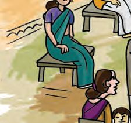
Figure fig_ch02_p028_11 (Page 28) Figure fig_ch02_p028_12 (Page 28) Figure fig_ch02_p028_13 (Page 28) Figure fig_ch02_p028_14 (Page 28) Figure fig_ch02_p028_15 (Page 28) Figure fig_ch02_p028_16 (Page 28) Figure fig_ch02_p028_17 (Page 28) Figure fig_ch02_p028_18 (Page 28)
ഗണിതം
ാൻേഡർഡ് - III
േകാർണർ പി. ടി. എ.
അ ാ... വരുേ ാh പഴം
വാ േണ... നാെള േകാhണh
പി.ടി.എ. ന ുെട വീ ിലേ .
അ ൻ േകാhണh പി.ടി.എ. ് േവ ി ആറ് കിേലാ ാം പഴം വാ ി. ഒരു
കിേലാ ാം പഴ ിന് 50 രൂപയാണ് വില. 500 രൂപ കടയിൽ െകാടു ു.
ബാ ി മൂ ് തരം േനാ ുകൾ ആണ് തിരി ് കി ിയത്. ഏെതാെ
േനാ ുകളാണ് തിരി ുകി ിയത് ?
ഓേരാ ും എ വീതം?
േനാ ്
എ
ം
തിരി ് കി ിയത്
നാല് തരം
േനാ ുകൾ
ആെണ ിേലാ ?
28
േനാ ്
എ
ം
Figure fig_ch02_p029_01 (Page 29) 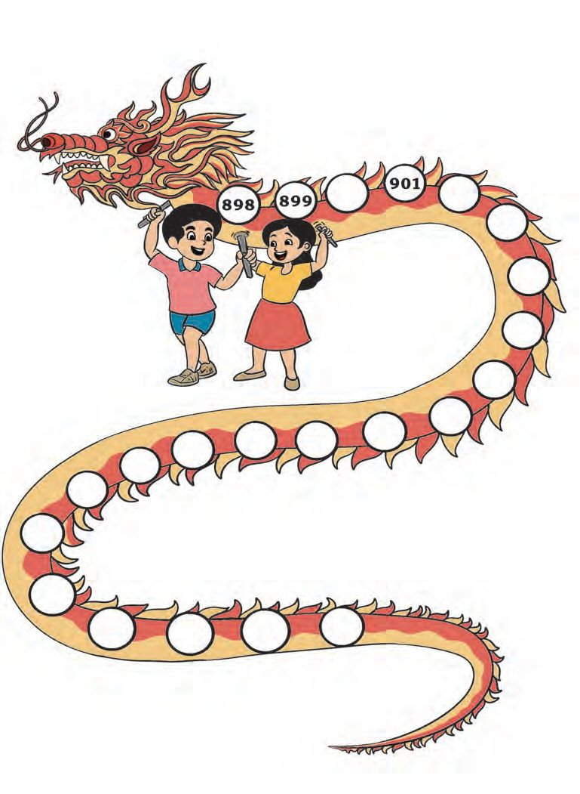
Figure fig_ch02_p029_02 (Page 29) Figure fig_ch02_p029_03 (Page 29) Figure fig_ch02_p029_04 (Page 29)
സംഖ കൾ കൂ ുകാർ
ാഗh
മിൻഹയും കൂ ുകാരും പാർ
ിെല
ി.
ഇവിെട ഒരു ാഗൺ,
നമു ് അതിൽ കളി ാം.
ാഗണിൽ തുടർ ു വരു
സംഖ കൾ എഴുതൂ...
വായി
ൂ... സംഖ കെളഴുതൂ...
എ ൂ ി െതാ
ഒൻപത്
െതാ
ായിരം
െതാ
ഒ ്
ായിര
ൂ ി
ി
29
െതാ
െതാ
ായിര
ൂറ്
ി
െതാ
െതാ
െതാ
െതാ
ായിര ി
ൂ ിഅ ്
ായിര ി
ൂ ിഎ ്
Figure fig_ch02_p030_01 (Page 30) Figure fig_ch02_p030_02 (Page 30) Figure fig_ch02_p030_03 (Page 30) Figure fig_ch02_p030_04 (Page 30) 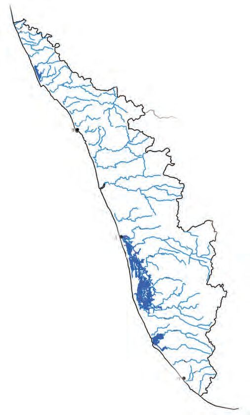
Figure fig_ch02_p030_05 (Page 30)
ഗണിതം
ാൻേഡർഡ് - III
സേഹാദരെ
സ ാനം
മിhഹ ് േച ൻ ഒരു സ ാനം
െകാടു ു. േകരള ിെല നദികൾ
അടയാളെ ടു ിയ ചി ം. അവh ്
സ ാനം വളെര ഇ െ ു.
േകാഴിേ
േകരള ിെല ചില നദികളുെട േപരും
അവയുെട നീളവും അവർ പ ികയിൽ
എഴുതിയത് േനാ ൂ... ചുവെടയു
േചാദ ൾ ് ഉ രെമഴുതൂ...
ാട്
െകാ ി
നദിയുെട േപര്
ശ രം പുഴ
16
വളപ ണം പുഴ
110
ചാലിയാർ
169
ഭാരത ുഴ
209
െപരിയാർ
244
പ യാർ
176
അ hേകാവിലാർ
128
െന ാർ
56
ക ടയാർ
121
മേ
തിരുവന പുരം
ഏ വും നീളം കൂടിയ നദി
ഏ വും നീളം കുറ
ചാലിയാറിേന
ഉ ത് ? നീള
നദി
നീളം
(കിേലാമീ ർ)
ാൾ നീളം കൂടിയ എ നദികളാണ് പ ികയിൽ
ിനനുസരി ് വലുതിh നി ് െചറുതിേല ് എഴുതൂ...
30
Figure fig_ch02_p031_01 (Page 31) Figure fig_ch02_p031_02 (Page 31) Figure fig_ch02_p031_03 (Page 31) Figure fig_ch02_p031_04 (Page 31)
സംഖ കൾ കൂ ുകാർ
വിലയിരു
ൽ
വർ
1. പാേ h പൂh
ിയാ
ാം.
11, 22, 33, 44,
,
,
,
,
150, 250, 350,
,
,
,
,
,
,
,
,
,
,
100, 101, 103, 106
990, 980, 970,
2. ഞാനാെര
ൾ
എെ
,
,
ഞാനാര് ?
സംഖ യാണ്.
80 h കൂടുതലാണ്.
ഒ ുകളുെട
ാനെ
ാനെ
അ േ
ഞാh
വക.
് പറയാേമാ ?
ര
ഞാh
ന
അ ം പ ുകളുെട
ാh 1 കൂടുതലാണ്.
മൂ
സംഖ യാണ്.
അ
ളുെട തുക 15 ആണ്.
ഒ ുകളുെട
ാനെ
അ േ
കുറവാണ് നൂറാം
ാനെ
അ
ഞാനാര് ?
ം.
ാh 8
ഇതുേപാെല ഒരു േചാദ ം നി ളും േനാ ുബു ിൽ എഴുതൂ...
േചാദ ൾ കൂ ുകാരുമായി ൈകമാറി ഉ ര ൾ ക ുപിടി
31
ൂ...
Figure fig_ch02_p032_01 (Page 32)
ഗണിതം
ാൻേഡർഡ് - III
3.
ൂൾ േ ാർ
ൂൾ േ ാറിേല ് 950 െപhസിലുകൾ േവണം. മിhഹ 7 െപ ി
െപhസിലുകളും 6 പാ ് െപhസിലുകളും െകാടു ു. ഒരു െപ ിയിh 100
െപhസിലുകളും ഒരു പാ ിh 10 െപhസിലുകളുമാണു ത്. ഇനി എ
െപhസിലുകൾ കൂടി െകാടു ാh 950 ആകും ?
എ
െനയാണ് കണ
ാ
ിയത് ?
950 െപൻസിലുകൾ െപ ിയിലും പാ
ിലുമായാണ്
െപ ികളുെട
എ ം
പാ ുകളുെട
എ ം
െകാടു
ു െത ിേലാ?
4. വി ുേപായ കള
h പൂh
ിയാ
ുക.
i.
301
401
501
ii.
299
399
499
iii.
300
400
500
32